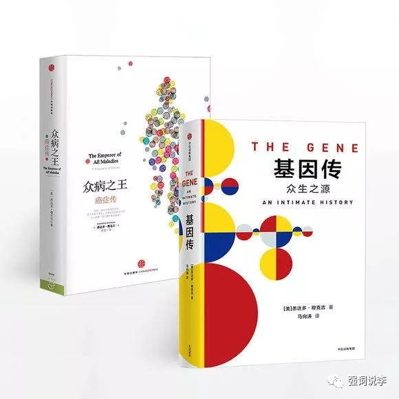
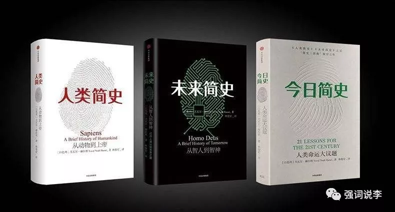
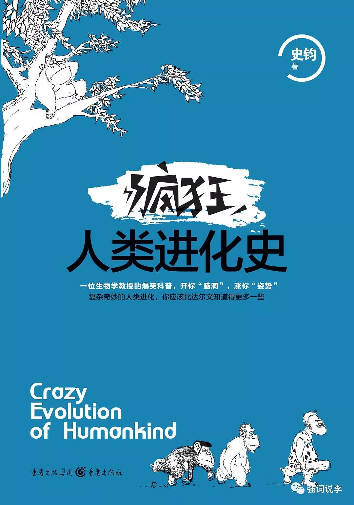
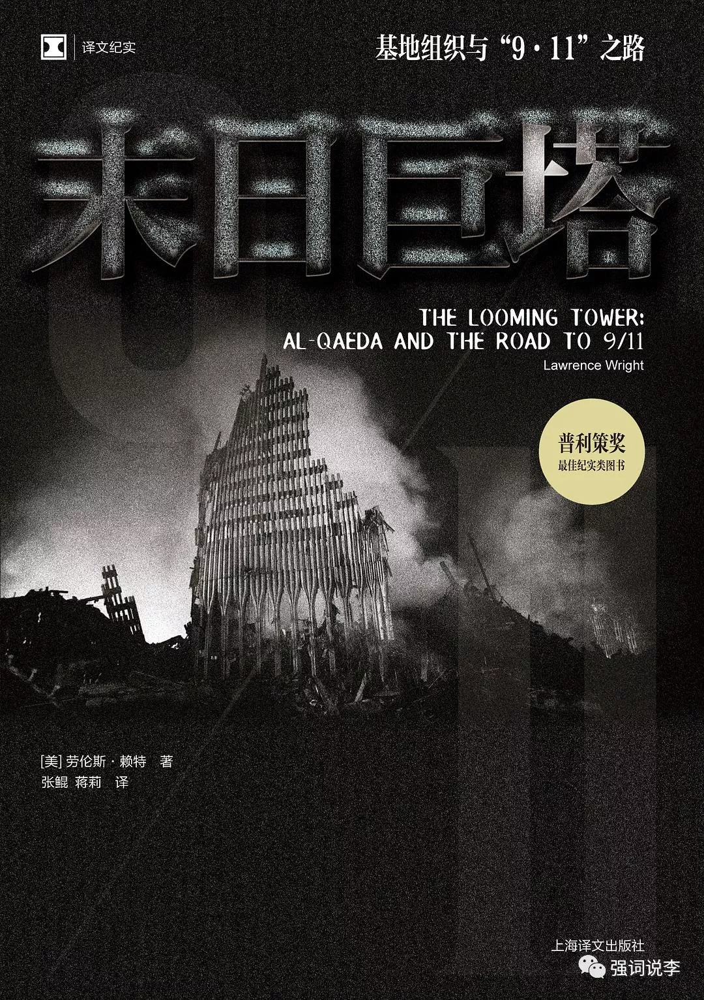
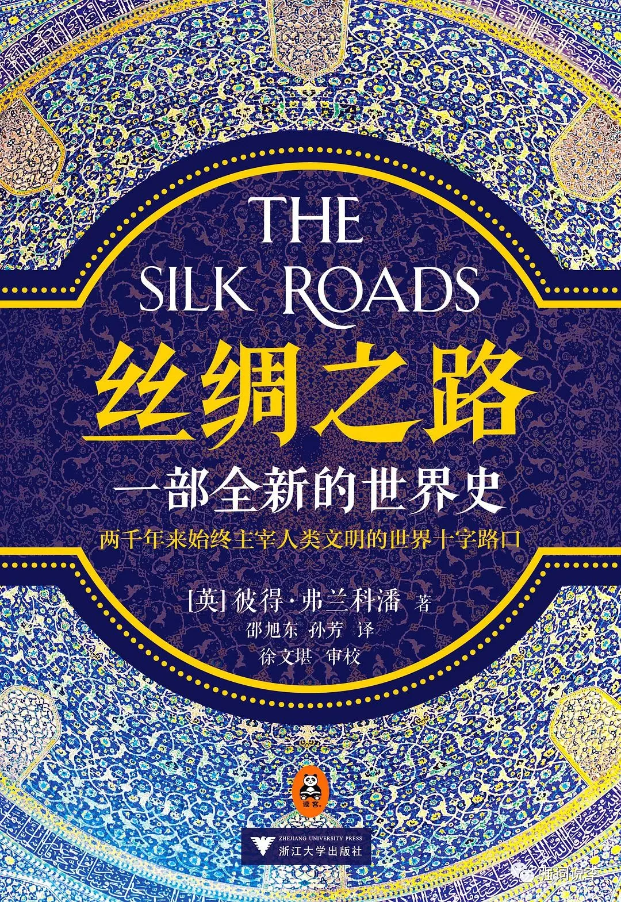
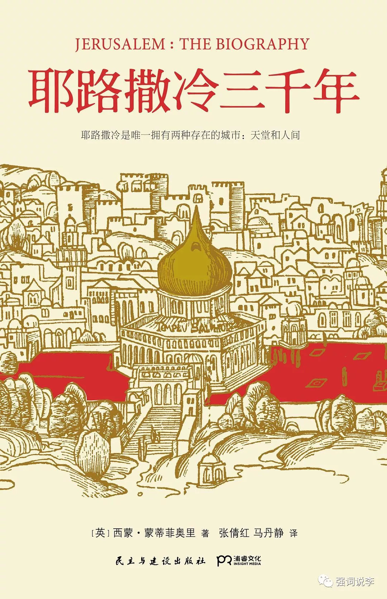
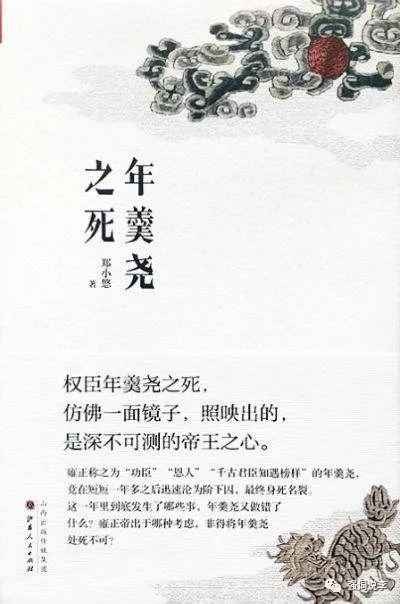
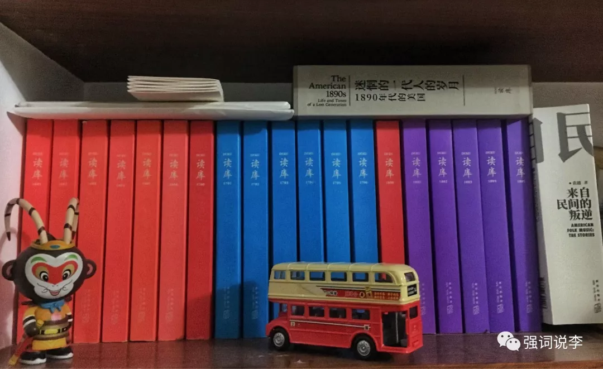

2018年路上看的那些书
每天路上早30晚20需要50分钟左右，一周250分钟，除去国庆过年两周假，大概有250 X 50 = 12500分钟 / 60 = 208小时，加上20次左右香港买奶粉，每次来回路上需要100分钟左右，共100 * 20 = 2000分钟 / 60 = 33小时。所以一年有大概240小时，也就是说去年我有整整10天的时间在车上。
kindle在手，边看边走。这10天时间里看过不少闲书。列出其中部分好书，记录一下这个过去的2018年。
文明的进程系列
这是中信出的一个系列。包括《上帝之饮》《黑石头的爱与恨》《万用之物》《一条改变世界的鱼》《蛊惑世界的力量》，讲述一些生活中常见的一些东西是如何改变这个世界的。
其中前四本是年初看完的，笔记在这里。《蛊惑世界的力量》是下半年才看，关于可卡因的故事本来没什么兴趣，后面发现出了kindle版就看看吧，整整齐齐的，没想到却非常精彩。
可能是因为可卡因本身相对于盐、煤、所谓的六个瓶子以及鳕鱼这些生活中常见的物件神秘色彩多一些，加上作者也真下功夫，多次深入南美古柯种植腹地甚至监狱采访大毒枭们以及毒品从业者们，这些传奇人物每个人都是一部大片，比如美剧《毒枭》原型就是史上最猖狂哥伦比亚大毒枭埃斯科巴，阅读感特别爽。
基因传

这书是比尔盖茨推荐书单中的一本，作者是专业医生文采又好，非常好的科普书。内容从我们熟悉的高中生物中孟德尔豌豆实验到人体胚胎研究，从双螺旋结构发现到基因重组，从违背伦理的优生学到基因诊断基因治疗，抽丝剥茧妙趣横生解开生命起源之谜。了解基因研究的历史，也是了解人类寻找生命秘密的历史，推荐给科学爱好者。另外，作者的《癌症传》更值得一推。未来简史和今日简史

11月看完今日简史，简单写过一段尤瓦尔·赫拉利三部曲的感受发朋友圈。
首先《人类简史》，读到此书何止非常震撼真的非常震撼啊，如果说之前看过的历史是在万米高空俯瞰一段几千年几百年历史，那《人类简史》直接把你带到外太空看整个人类历史几十万年的尺度。这本书能告诉你为什么相对于猛兽恐龙来说渺小的人类能成为世界的主导。
首先人类脑容量大，比其他动物更聪明。其次人类直立行走，解放了双手能做更多事情。又因为直立行走导致女性盆骨变小，加上脑袋又大。所以胎儿必须在还未发育完成就出生。为了抚养幼儿，男女必须合作，于是有了社交。而喉咙的进化让人有了语言能力，啊，终于可以八卦了。这一下子爆发了“认知革命”，也就有了本书的核心观点。“人类拥有其他生物没有的能力，创造并相信虚构故事的能力”，因为相信爱情故事，组成了家庭，相信种族的故事，有了部落，然后有了国家有了宗教等等。从而人类走上了食物链的顶端，主宰这个星球。才有了后面的农业革命工业革命信息革命。
屁爱斯：关于这些观点，后面看过另一本书说的更清楚更准确，更有说服力《枪炮病菌与钢铁》，建议一起服用效果更佳。
《未来简史》不是在空间高度了，而是在时间轴上跑到很远很远的地方去回看现在的世界，饥饿、瘟疫、战争这三大问题已经不复存在了，如何长生不老，永远幸福已经得到成仙成为了新的议题。当前这个故事已经不适合了，人类需要相信一个新的故事，而新的三大议题就是要建立一个新的愿景，让人们相信这个新故事。老实说这本书没给我带来什么震撼所以内容基本上都忘记了。
《今日简史》这本书感觉就比较分散了，书里面也说了，主要是一些演讲和文章合集，副标题21世纪的21个人类命运的议题才是真书名，强行“简史”应该是出版商硬凑三部曲取的名。这本书则主要是对今日世界现状的一些担忧，自由主义这个故事已经开始不被信任，种族主义极权主义的故事开始死灰复燃。政治、经济、宗教、信息科技带来一些社会问题拷问人们该何去何从。然后又给出了一些世界真相，谎言万世永存。要生存下去，就必须提高自我心智的认知，这里作者夹带私货推荐使用“冥想”来了解自己的心智。这本书里面作者对自由主义、恐怖主义、宗教的解读让人耳目一新叹为观止，算一个小震撼。
疯狂人类进化史

男人为什么长胡子？女人为什么来大姨妈？我们为什么两条腿走路？人类为什么不像动物有浓密的毛发？生孩子为什么这么痛？怀孕为什么要吃叶酸？这本200多页小书能让你了解这些知识，知其然且知其所以然。不厚但知识量确实非常丰富，总之用几个小时看看这本书，可以给你在吹牛的时候带来丰富的谈资。
末日巨塔

这书可以让你对基地组织的来龙去脉，极端思想的起源与发展有个全面的了解。看完这本书才知道，911本来是可以不发生的，美国的官僚主义是促使这场悲剧发生的原因之一，真实的FBI也并不是詹姆斯邦德、伊森亨特那样的。总之这不是小说，但比小说精彩。不过这书挺厚的，不想看的话可以去看看该书改编的纪录片《巨塔杀机》。
丝绸之路

主题非常宏大，以丝绸之路为视角撰写的一部贸易史、宗教史、战争史、文化史、地缘政治史。作为东西方文明交汇的中亚，除了伊斯兰、石油、土豪我们向来知之甚少，但它却始终主宰着人类文明的进程，文明的过去现在和未来都脱离不开这个舞台。此书对于我这种历史知识结构不完整的渣渣来说缺点就是内容太丰富以至于看完很难消化，感觉看到很多东西，实际上什么都没记住。
耶路撒冷三千年

很多年前就想看，拖到今年才看的一本书。做过笔记在这，不多说。
为了了解欧洲中世纪，又看了《十字军东征简史》《1453:君士坦丁堡的陷落》《欧洲中世纪史》，还有一本厚厚的《西欧中世纪史》没看。几个月过去，看过的又都忘记了。
年羹尧之死

喜欢这样的小书，三个上下班就看完了。一本书把一个人一件事讲清楚就行。这本小书就是把雍正和年羹尧的关系讲清楚了，从恩人恩人叫不停到说了要杀你全家就杀你全家（夸张了，也没有杀全家，只杀了年氏父子）一年时间不到。
另外，看了这书才知道，年贵妃并不是如樊胜美大姐演的华妃那样好勇斗狠，历史上的年贵妃为人温和远离宫斗，可以说是雍正最宠爱的妃子。
读库

除了全年读库，双11还买了两本读库出的书，虽然还没看。土摩托《来自民间的叛逆》讲述美国民谣历史，《迷惘的一代人的岁月：1890年代的美国》，两本都是大部头，希望19年能抽空看完。另外读库还有很多没买的垂涎已久但忍住没下手的好书，因为路上看实体书不太方便，而除了在路上实在没太多时间看闲书。总之，爱书之人，读库出品绝不容错过。
说说这一年的读库，除了1806还没到手。
- 1801
特别喜欢《我的鄂温克朋友》和《额尔古纳河右岸》，展现大兴安岭鄂温克族驯鹿人的真实生活场景，这种独特的人与自然相处的场景可能不记录下来过不了几年就会绝迹。有纪录片《敖鲁古雅》可以搜来看看。
《凭什么是神作》权游铁粉通过抓取书中所有人物建立权游社交模型，来解析为什么《权利的游戏》是一部神作。
马亲王总能写一些有趣的东西，《星座照耀中国》搭配亲王在一席的演讲一起服用，效果更佳。
- 1802
上半年比特币大火，读库也适时推出一篇《区块链与比特币》特别适合普通人了解比特币背后的原理，好在是年初推出，要搁现在币圈凉凉，恐怕没多少人有兴趣看完。
《1978年，北京宾馆不够了》这篇有意思，从现在的生活视角看来有点不可思议，七十年多才多少人住宾馆啊，怎么可能会宾馆不够呢？可那个特殊的历史时期就是这样。
《不体面的撕扯》，郁达夫和王映霞的陈年旧事。民国文人圈子感觉有点像现在的娱乐圈，各种花边新闻。得亏那会儿还没有微博，否则可苦了微博的运维，三天两头得扩容。
- 1803
《毕飞宇和他的王家庄》是对毕飞宇的一次访谈。
《人间日常》用插画的形式展现生活中真实的一面，生活没有那么美也没那么糟糕，特别喜欢，40副插画看了一遍又一遍。
《黎曼假设平话》没看懂，后面黎曼假设这个话题火了想去再看一遍结果到现在也没再去看。
《中考魔方》现在孩子读书升学苦是孩子父母一起辛苦，可怜天下父母心。
- 1804
《嘉靖律政风云》看标题我就在想会不会是马亲王的文章，一看果然是。看了一段我想会不会和之前的徽州丝绢案有关啊，看后记还确实也能强行拉上关系。
《流浪广州》一个台湾的富二代，整个下半生却在广州流浪，一个街头流浪汉也有一身的故事。
《伤痕》讲述文革中那一代人的短篇连环画，那个魔幻年代啊，带来多少伤害。
- 1805
《走出深渊》关于救援泰国足球小球员最好的一篇报道，因为先前在网上看过，就直接pass了，但真的推荐阅读。
《出不来那沟》当年没回城知青的故事，我们需要去了解上一代人经历了什么。
1806在公司快递柜躺着，2019年定了完整套餐，《读库》+《读小库》+小册子。虽然穷，但好书还是要买啊。